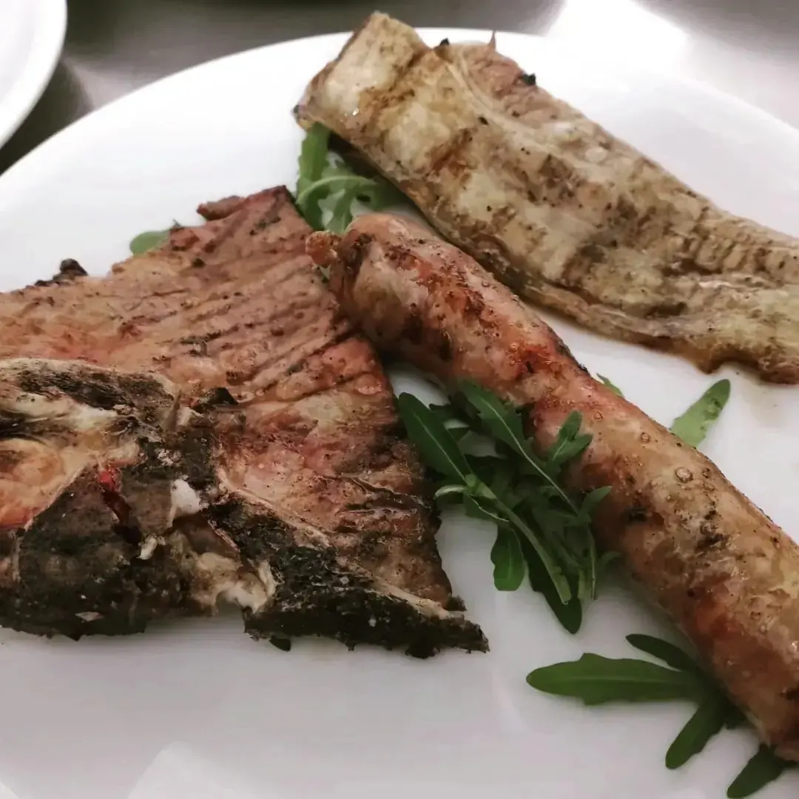
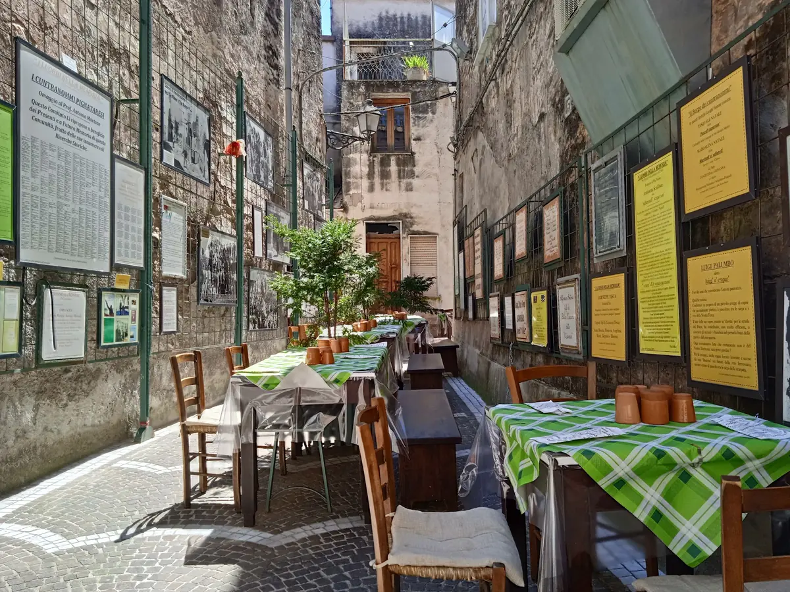

Carne alla brace con la rucola.

Osteria napoletana · Pignataro Maggiore
AnticaOsteriaDuca d'Aosta
Osteria napoletana a Pignataro Maggiore, in Via Duca d'Aosta, 3.
4,6252 recensioni GoogleVia Duca d'Aosta, 3, 81052 Pignataro Maggiore, CE

I tavoli nel vicolo, con le tovaglie a quadri verdi.
Via Duca d'Aosta, 3, Pignataro Maggiore. 4,6 su 5 su Google, 252 recensioni.
Recensioni
Cosa dicono i clienti
4,6 su 5 · 252 recensioni su Google. Qui sotto alcune, riportate senza modifiche (i nomi sono abbreviati).
★★★★★
Piacevole sorpresa, fermati per caso ma assolutamente valsa la pena.
Cucina tipica locale e gestione ottima, i proprietari sono stati molto gentili e disponibili.
In due abbiamo mangiato un antipasto misto della casa ed i due primi del giorno, con vini caffè, acqua e dolce abbiamo speso sui €50.
Consigliassimo se passate di lì.
★★★★★
Osteria che propone piatti caserecci e abbondanti. Solo l’antipasto vi riempie 😅. I prodotti sono freschi,saporiti e appetitosi. Stai ben sicuro che te ne vai con la pancia piena e soddisfatto. Quindi se ti trovi a Pignataro maggiore passaci perché ne vale la pena. Se ti piace mangiare stai apposto 😆. Ah ovviamente prendi il vino di casa che è molto buono! L’unica cosa che voglio recensire negativamente è un po’ il locale…non lo so ma ci manca quel tocco di personalità xo per il resto tutto ottimo.
★★★★★
Antica osteria ove si mangia benissimo.I titolari Ottavio ed Anna sono molto ospitali soprattutto Anna è una cuoca eccezionale.Gli antipasti di terra ottimi. Superlativa la genovese con i ziti spezzati a mano.Buonissima anche la porchetta con contorno di friarielli Sicuramente ritorneremo !!!
★★★★★
Se volete assaporare tutti i gusti della nostra tradizione, vi consiglio questa fantastica osteria. Prodotti freschi e a km0, tutto preparato e cucinato al momento. Con un prezzo di 20€/persona mangerete un antipasto infinito che varia a seconda della stagione dato che tutti i prodotti sono freschi, un primo/secondo (entrambi sarà dura, noi non ci siamo riusciti) e dolce, anch'esso fatto in casa. Simpaticissimo il signor Giorgio, Clelia e suo marito (lo chef)! Davvero complimenti!
★★★★★
Locale molto piccolo (può ospitare credo non più di 20 persone) ma accogliente e molto carino. Lo stesso è a conduzione famigliare ed è sicuramente un punto a favore. Le materie prime sono di prima qualità e la limitata scelta di primi e secondi ne è una prova (viene servito solo ciò che può essere fatto con i prodotti che vengono trovati). La cucina è eccellente ed i prezzi buonissimi. Consigliatissimo
Orari e dove siamo
Vieni a trovarci
| Lunedì | Chiuso |
|---|---|
| Martedì | Chiuso |
| Mercoledì | Chiuso |
| Giovedì | Chiuso |
| Venerdì | 24:00–24:00 |
| Sabato | 24:00–24:00 |
| Domenica | 12:00–17:00 |
Antica Osteria Duca d'Aosta
Via Duca d'Aosta, 3, 81052 Pignataro Maggiore, CE
338 908 8430
Orari della scheda Google: nei festivi possono cambiare, chiamateci per conferma.
Via Duca d'Aosta, 3, 81052 Pignataro Maggiore, CE
Contatti
Scrivici
Un messaggio su WhatsApp, o una telefonata: vi risponde Duca d'Aosta.